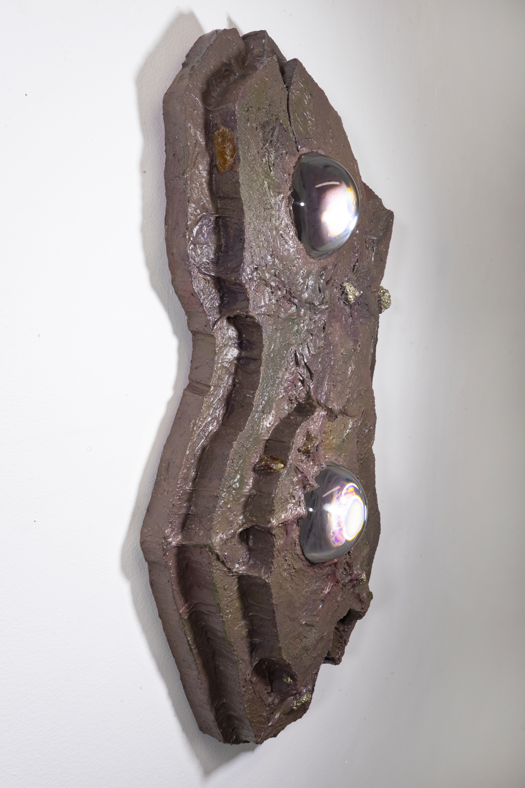
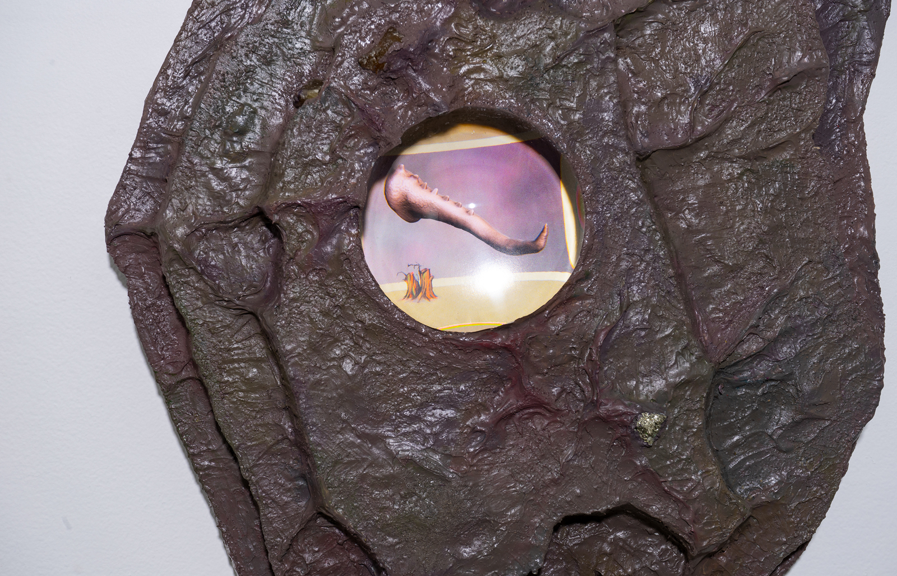
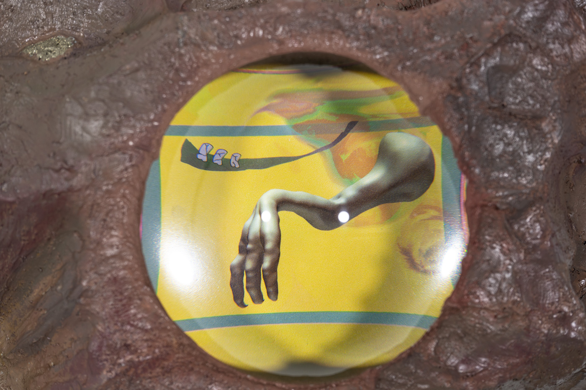

Joseph McGehee
b.1993 in Everett, Washington
Chunk of Old Earth
Presented in 2018 at King’s Leap, New York as part of “Games of Ceres" Organized by Lauren Studebaker

Chunk of Old Earth (A)




Recent Paintings
Lifting Off from a Massive Field, a Glowing Plane - Mole End, 2019
contact@josephmcgehee.info